Um ponto firme, medido pelo céu.
Marca do Ícaro Silva, versão 3: um latino criando sistemas que geram impacto social, com inclusão, segurança e raízes firmes, guiado pela astronomia.
23°33′01″S 46°38′02″W · marco zero de São Paulo
Logo oficial: Sol e asa
A v3. O meio sol e a engrenagem cortada ao meio fecham um círculo dividido pela linha: o céu de um lado, a engenharia do outro. Da engrenagem nasce a asa. Troque o tema no topo para ver no chão e no céu. Arquivos em assets/v3/.
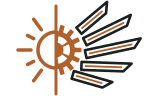
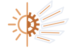
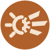
Versões anteriores
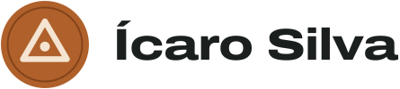
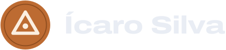
assets/v2/.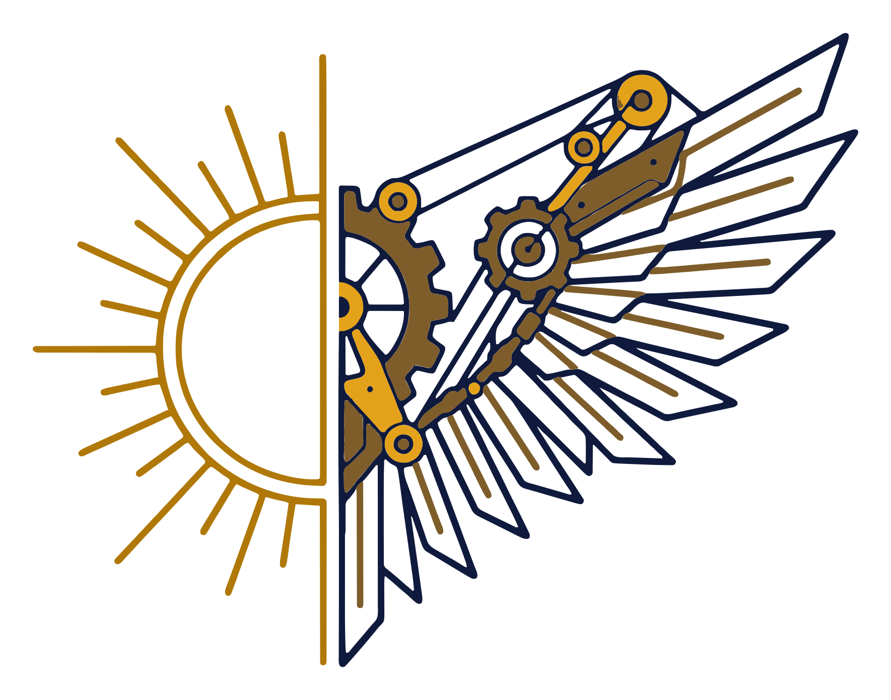
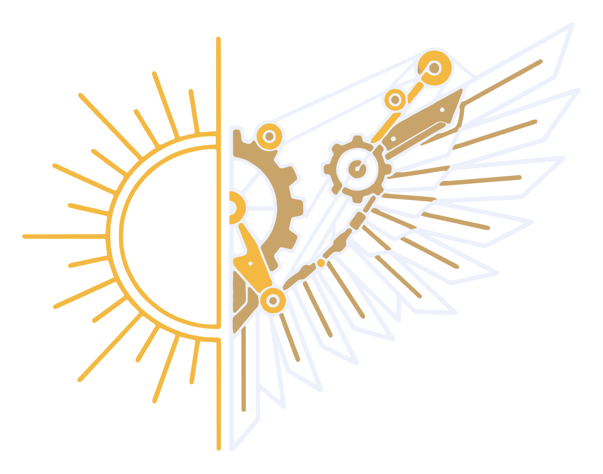
assets/v1/, com o README antigo em v1/.Explorações
Opções desenhadas pelo caminho, guardadas em assets/exploracoes/.
-
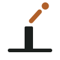
Visada -
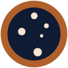
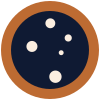
Cruzeiro -
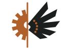
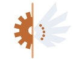
Engrenagem solar -
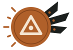
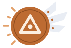
Vértice alado -
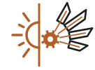
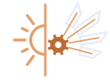
Sol e asa, primeira versão
Assinatura
Um ponto firme, guiado pelo céu do Sul.
"Um ponto firme" é o marco e as raízes; "guiado pelo céu do Sul" é a astronomia e o Brasil. Substitui "Voar alto, levando todo mundo junto", da v1.
Cores
O concreto da base, o bronze do disco, o azul dos rios nas cartas do IBGE e o vermelho da terra roxa do interior paulista. As amostras mostram o tema ativo.
Tipografia
Archivo, expandidaTítulos. Omnibus-Type, Argentina.
Sistemas que funcionam para todo mundo.
Atkinson Hyperlegible NextTexto. Braille Institute.
Crio sites e apps que funcionam para todo mundo, inclusive para quem quase sempre fica de fora. As letras I, l e 1 e O e 0 não se confundem.
Atkinson Hyperlegible MonoSó coordenadas e dados.
23°33′01″S 46°38′02″W · 2025–2029
Componentes
Como a marca chega ao site. Tudo aqui funciona com teclado.
Enquanto organizo meus projetos, o código está no meu GitHub.
Escreva seu nome para eu saber com quem estou falando.
Formação como poligonal
- 2025–2029
Bacharelado em Ciência da Computação
UNINTER
- 2025
Programação em Python
SENAI
- 2021
Certificação em Desenvolvimento Web Full Stack
Programador BR
- 2020–2021
Técnico em Análise e Desenvolvimento de Sistemas
SENAI Zerbini, Campinas (SP)